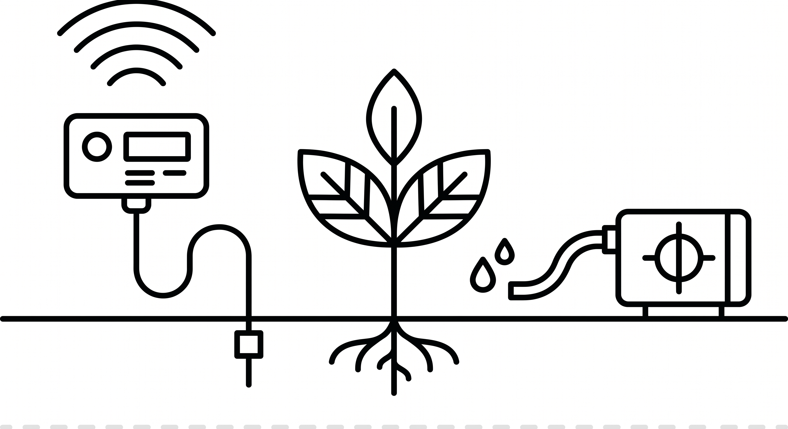

İçindekiler Table of Contents Sommaire
- Sistem TanıtımıProduct OverviewPrésentation du produit
- Kutu İçeriğiPackage ContentsContenu de l'emballage
- Donanım KurulumuHardware SetupInstallation matérielle
- Ağ YapılandırmasıNetwork ConfigurationConfiguration réseau
- Web PaneliWeb DashboardTableau de bord web
- Sohbet AsistanıChat AssistantAssistant conversationnel
- Otomasyon KurallarıAutomation RulesRègles d'automatisation
- Manuel KontrolManual ControlCommande manuelle
- Sorun GidermeTroubleshootingDépannage
- Fabrika AyarlarıFactory ResetRéinitialisation d'usine
- Güvenlik BilgileriSafety InformationConsignes de sécurité
1. Sistem Tanıtımı
1. Product Overview
1. Présentation du produit
AgriChat, üreticilerin sulama altyapısını doğal dil komutlarıyla yönetebilmesini sağlayan uçtan uca bir IoT tarım otomasyon çözümüdür. ESP32 tabanlı sensör ünitesi; toprak nemi, hava sıcaklığı ve bağıl nem ölçümlerini gerçek zamanlı olarak TLS şifreli MQTT protokolü üzerinden bulut altyapısına iletir.
Gemini büyük dil modeli ile entegre çalışan asistan, kullanıcı komutlarını yapılandırılmış sulama eylemlerine dönüştürür. Kural motoru, eşik tabanlı ve zamanlanmış otomasyonları sürdürerek operatör müdahalesi olmadan optimal su kullanımı sağlar.
AgriChat is an end-to-end IoT agricultural automation solution that enables operators to manage irrigation infrastructure through natural-language commands. The ESP32-based sensor node transmits soil moisture, ambient temperature, and relative humidity measurements in real time over TLS-encrypted MQTT.
The assistant, integrated with the Gemini large language model, translates user commands into structured irrigation actions. A rule engine maintains threshold-based and scheduled automations, ensuring optimal water usage without manual intervention.
AgriChat est une solution d'automatisation agricole IoT de bout en bout qui permet aux exploitants de gérer l'irrigation par des commandes en langage naturel. Le module capteur basé sur ESP32 transmet en temps réel l'humidité du sol, la température ambiante et l'humidité relative via MQTT chiffré TLS.
L'assistant, intégré au grand modèle de langage Gemini, convertit les commandes utilisateur en actions d'irrigation structurées. Un moteur de règles gère les automatisations par seuils et planifiées, assurant un usage optimal de l'eau sans intervention manuelle.
2. Kutu İçeriği
2. Package Contents
2. Contenu de l'emballage
Ürünü teslim alır almaz aşağıdaki bileşenlerin eksiksiz biçimde mevcut olduğunu doğrulayınız:
- 1 × ESP32 sensör ünitesi (IP65 muhafaza içinde, monte edilmiş halde)
- 1 × Kapasitif toprak nem sensörü (3 m kablo)
- 1 × BME280 sıcaklık ve bağıl nem sensörü
- 1 × 12 V DC su pompası ve 2 m hortum
- 1 × 12 V / 2 A güç adaptörü (CE sertifikalı)
- 1 × 18650 Li-ion pil (ünite içerisine takılı)
- 1 × Hızlı başlangıç kartı (QR kodlu)
Upon delivery, verify that all of the following components are present:
- 1 × ESP32 sensor unit (pre-assembled in IP65 enclosure)
- 1 × Capacitive soil-moisture sensor (3 m cable)
- 1 × BME280 temperature and humidity sensor
- 1 × 12 V DC water pump with 2 m hose
- 1 × 12 V / 2 A power adapter (CE certified)
- 1 × 18650 Li-ion battery (pre-installed in unit)
- 1 × Quick-start card (with QR code)
À la livraison, vérifiez la présence de l'ensemble des composants suivants :
- 1 × Unité de capteurs ESP32 (préassemblée dans un boîtier IP65)
- 1 × Capteur d'humidité du sol capacitif (câble de 3 m)
- 1 × Capteur de température et d'humidité BME280
- 1 × Pompe à eau 12 V CC avec tuyau de 2 m
- 1 × Adaptateur secteur 12 V / 2 A (certifié CE)
- 1 × Batterie Li-ion 18650 (préinstallée dans l'unité)
- 1 × Carte de démarrage rapide (avec code QR)
3. Donanım Kurulumu
3. Hardware Setup
3. Installation matérielle
3.1 Sensör Ünitesinin Konumlandırılması
- Üniteyi doğrudan güneş ışığı almayan, yağmurdan korunaklı bir alana yerleştirin.
- WiFi erişim noktasına olan mesafenin 30 metreyi aşmadığından emin olun.
- Toprak nem sensörünü, sulanacak alanın kök bölgesine 5–7 cm derinliğinde gömün.
3.2 Su Pompasının Bağlanması
- Pompayı su deposuna ya da tanka yerleştirin.
- Hortumu pompa çıkışına takın ve sulanacak alana yönlendirin.
- 12 V adaptörü önce pompaya, ardından şebekeye bağlayın.
3.3 Cihazın İlk Açılışı
Ünitenin yan yüzeyindeki güç anahtarını "ON" konumuna alın. Gösterge LED'i mavi yanıp sönüyorsa cihaz yapılandırma moduna girmiş demektir.
Önemli Uyarı
Sensör ünitesi su geçirmezdir; ancak tam suya batırma desteklenmez. Muhafazanın conta yüzeyinin temiz ve kapalı olduğundan emin olun.
3.1 Sensor Unit Placement
- Position the unit in a shaded location, protected from direct rain.
- Ensure the distance to the WiFi access point does not exceed 30 meters.
- Bury the soil-moisture sensor 5–7 cm deep within the root zone of the irrigation area.
3.2 Water Pump Connection
- Place the pump in the water reservoir or tank.
- Connect the hose to the pump outlet and route it to the irrigation area.
- Plug the 12 V adapter into the pump first, then into the mains.
3.3 Initial Power-On
Switch the power button on the side of the unit to the "ON" position. A blinking blue LED indicates that the device has entered configuration mode.
Important Notice
The sensor unit is water-resistant but not designed for full submersion. Ensure the gasket surface of the enclosure is clean and properly closed.
3.1 Positionnement de l'unité de capteurs
- Placez l'unité dans un endroit ombragé, à l'abri de la pluie directe.
- Veillez à ce que la distance jusqu'au point d'accès WiFi n'excède pas 30 mètres.
- Enfouissez le capteur d'humidité à 5–7 cm de profondeur dans la zone racinaire.
3.2 Raccordement de la pompe à eau
- Placez la pompe dans le réservoir ou la cuve d'eau.
- Connectez le tuyau à la sortie de la pompe et dirigez-le vers la zone à irriguer.
- Branchez l'adaptateur 12 V d'abord à la pompe, puis au secteur.
3.3 Première mise sous tension
Placez l'interrupteur situé sur le côté de l'unité en position "ON". Un voyant bleu clignotant indique que l'appareil est passé en mode configuration.
Avertissement important
L'unité est résistante à l'eau mais non conçue pour une immersion totale. Assurez-vous que le joint du boîtier est propre et bien fermé.
4. Ağ Yapılandırması
4. Network Configuration
4. Configuration réseau
4.1 Kurulum Ağına Bağlanma
- Akıllı telefon veya tabletinizde WiFi ayarlarını açın.
- Erişilebilir ağlar listesinden
AgriChat_Setup_XXXXadlı ağa bağlanın. - Yapılandırma sayfası otomatik açılmazsa tarayıcınızdan
192.168.4.1adresini ziyaret edin.
4.2 Kimlik Bilgilerinin Girilmesi
- Açılan sayfada hedef WiFi ağını seçin.
- Ağ parolasını girin.
- Kaydet ve Bağlan butonuna tıklayın.
- Cihaz yaklaşık 10 saniye içinde yeniden başlatılır.
4.3 Bağlantı Doğrulaması
Gösterge LED'i kesintisiz yeşil ışık vermeye başladığında cihaz başarılı şekilde ağa katılmıştır. Web panelinde cihazın "online" durumunda görünmesi kurulumun tamamlandığını teyit eder.
4.1 Connecting to the Setup Network
- Open the WiFi settings on your smartphone or tablet.
- From the list of available networks, connect to
AgriChat_Setup_XXXX. - If the configuration page does not open automatically, navigate to
192.168.4.1in your browser.
4.2 Entering Credentials
- On the page that appears, select your target WiFi network.
- Enter the network password.
- Click Save and Connect.
- The device will restart within approximately 10 seconds.
4.3 Connection Verification
When the status LED turns to solid green, the device has successfully joined the network. Confirmation is complete when the device appears as "online" on the web dashboard.
4.1 Connexion au réseau de configuration
- Ouvrez les paramètres WiFi de votre smartphone ou tablette.
- Dans la liste des réseaux disponibles, connectez-vous à
AgriChat_Setup_XXXX. - Si la page de configuration ne s'ouvre pas automatiquement, accédez à
192.168.4.1depuis votre navigateur.
4.2 Saisie des identifiants
- Sur la page affichée, sélectionnez le réseau WiFi cible.
- Saisissez le mot de passe du réseau.
- Cliquez sur Enregistrer et connecter.
- L'appareil redémarrera en 10 secondes environ.
4.3 Vérification de la connexion
Lorsque le voyant d'état passe au vert fixe, l'appareil est correctement connecté au réseau. La configuration est confirmée lorsque l'appareil apparaît comme « en ligne » sur le tableau de bord.
5. Web Paneli
5. Web Dashboard
5. Tableau de bord web
5.1 Panele Erişim
Tarayıcınızdan https://agrichat.app adresine giderek hesap bilgilerinizle oturum açın. Chrome, Edge, Safari ve Firefox'un güncel sürümleri desteklenmektedir.
5.2 Sensör Değerlerinin Yorumlanması
| Ölçüm | Açıklama | İdeal Aralık |
|---|---|---|
| Toprak Nemi | Hacimsel su oranı | %30 – %60 |
| Sıcaklık | Ortam hava sıcaklığı | 15 – 30 °C |
| Bağıl Nem | Atmosferik nem oranı | %40 – %70 |
| Pil Seviyesi | Ünite şarj durumu | > %20 |
5.3 Geçmiş Veri Analizi
Panelin Grafikler sekmesi, son 14 güne ait sensör eğilimlerini görselleştirir. Tarih aralığı, üst menüden özelleştirilebilir.
5.1 Accessing the Dashboard
Navigate to https://agrichat.app in your browser and sign in with your account credentials. Current versions of Chrome, Edge, Safari, and Firefox are supported.
5.2 Interpreting Sensor Readings
| Measurement | Description | Optimal Range |
|---|---|---|
| Soil Moisture | Volumetric water content | 30% – 60% |
| Temperature | Ambient air temperature | 15 – 30 °C |
| Relative Humidity | Atmospheric moisture | 40% – 70% |
| Battery Level | Unit charge state | > 20% |
5.3 Historical Data Analysis
The Charts tab visualizes sensor trends over the past 14 days. The date range can be customized from the top menu.
5.1 Accès au tableau de bord
Rendez-vous à l'adresse https://agrichat.app dans votre navigateur et connectez-vous avec vos identifiants. Les versions récentes de Chrome, Edge, Safari et Firefox sont prises en charge.
5.2 Interprétation des relevés de capteurs
| Mesure | Description | Plage optimale |
|---|---|---|
| Humidité du sol | Teneur en eau volumétrique | 30 % – 60 % |
| Température | Température ambiante | 15 – 30 °C |
| Humidité relative | Humidité atmosphérique | 40 % – 70 % |
| Niveau de batterie | État de charge de l'unité | > 20 % |
5.3 Analyse historique des données
L'onglet Graphiques visualise l'évolution des capteurs sur les 14 derniers jours. La plage de dates est personnalisable via le menu supérieur.
6. Sohbet Asistanı
6. Chat Assistant
6. Assistant conversationnel
6.1 Komut Verme
Sohbet alanına doğal dilde mesaj yazarak sisteme komut iletebilirsiniz. Tipik örnekler aşağıdaki tabloda yer almaktadır:
| Amaç | Örnek Komut |
|---|---|
| Anlık sulama başlatma | "Tarlayı 10 dakika sula" |
| Otomatik kural tanımlama | "Nem %30'un altına düşerse sula" |
| Sistem durumu sorgulama | "Tarlanın güncel durumu nedir?" |
| Aktif kuralı durdurma | "Otomatik sulama kuralını devre dışı bırak" |
| Eşik güncellemesi | "Sulama eşiğini %25'e indir" |
6.2 Sistem Yanıtlarının Okunması
Asistan, her komut sonrasında planladığı eylemi özetler ve kullanıcı onayı talep eder:
Asistan Yanıtı
"10 dakikalık sulama görevi başlatılacaktır. Pompa 14:32 itibarıyla durdurulacaktır. Onaylıyor musunuz? (Evet / Hayır)"
6.1 Issuing Commands
You may issue commands by writing natural-language messages in the chat panel. Typical examples are listed in the table below:
| Intent | Example Command |
|---|---|
| Trigger immediate irrigation | "Water the field for 10 minutes" |
| Define an automatic rule | "Water when moisture drops below 30%" |
| Query system status | "What is the current field status?" |
| Deactivate an active rule | "Disable the automatic watering rule" |
| Update a threshold | "Lower the irrigation threshold to 25%" |
6.2 Interpreting System Responses
After each command, the assistant summarizes the planned action and requests user confirmation:
Assistant Response
"A 10-minute irrigation task will be initiated. The pump will stop at 14:32. Do you confirm? (Yes / No)"
6.1 Émission de commandes
Vous pouvez émettre des commandes en saisissant des messages en langage naturel dans la zone de discussion. Quelques exemples typiques :
| Intention | Exemple de commande |
|---|---|
| Déclencher une irrigation immédiate | « Arrose le champ pendant 10 minutes » |
| Définir une règle automatique | « Arrose lorsque l'humidité descend sous 30 % » |
| Consulter l'état du système | « Quel est l'état actuel du champ ? » |
| Désactiver une règle active | « Désactive la règle d'arrosage automatique » |
| Mettre à jour un seuil | « Abaisse le seuil d'irrigation à 25 % » |
6.2 Lecture des réponses du système
Après chaque commande, l'assistant résume l'action prévue et demande une confirmation :
Réponse de l'assistant
« Une tâche d'arrosage de 10 minutes va être lancée. La pompe s'arrêtera à 14:32. Confirmez-vous ? (Oui / Non) »
7. Otomasyon Kuralları
7. Automation Rules
7. Règles d'automatisation
7.1 Aktif Kuralların Görüntülenmesi
Panelin Kurallar sekmesinde tüm kayıtlı kurallar listelenir. Her satırda kuralın adı, koşulu ve durum göstergesi yer alır.
7.2 Kuralın Geçici Olarak Devre Dışı Bırakılması
Bir kuralı silmeden duraklatmak için ilgili anahtarı kapalı konuma getirin. Anahtar yeniden açıldığında kural mevcut yapılandırmasıyla çalışmaya devam eder.
7.3 Kuralın Silinmesi
Kuralın sağ tarafındaki sil simgesine tıklayın ve onay penceresinde işlemi teyit edin.
Dikkat
Silinen kurallar geri alınamaz. İşlemi gerçekleştirmeden önce yapılandırmanın yedeklendiğinden emin olun.
7.1 Viewing Active Rules
The Rules tab of the dashboard lists all registered rules. Each row displays the rule name, its condition, and a status indicator.
7.2 Temporarily Disabling a Rule
To pause a rule without deleting it, switch the corresponding toggle to the off position. When re-enabled, the rule resumes execution with its existing configuration.
7.3 Deleting a Rule
Click the delete icon to the right of the rule and confirm the operation in the dialog window.
Caution
Deleted rules cannot be restored. Ensure that the configuration has been backed up before proceeding.
7.1 Affichage des règles actives
L'onglet Règles du tableau de bord répertorie toutes les règles enregistrées. Chaque ligne indique le nom de la règle, sa condition et un indicateur d'état.
7.2 Désactivation temporaire d'une règle
Pour suspendre une règle sans la supprimer, placez l'interrupteur correspondant en position d'arrêt. Réactivée, la règle reprend son exécution avec sa configuration existante.
7.3 Suppression d'une règle
Cliquez sur l'icône de suppression à droite de la règle, puis confirmez l'opération dans la fenêtre de dialogue.
Attention
Les règles supprimées ne peuvent pas être restaurées. Assurez-vous que la configuration a été sauvegardée avant de procéder.
8. Manuel Kontrol
8. Manual Control
8. Commande manuelle
8.1 Pompanın Manuel Başlatılması
- Panelde Manuel Kontrol bölümüne gidin.
- Süre alanından 1 ila 30 dakika arası bir değer seçin.
- Başlat butonuna basın ve onay penceresinde işlemi teyit edin.
8.2 Pompanın Manuel Durdurulması
Etkin pompayı erken durdurmak için aynı sayfadaki Durdur butonuna basın. Komut anında ESP32'ye iletilir.
Güvenlik Kısıtı
Sistem, pompayı en fazla 30 dakika boyunca aktif tutar. Ağ bağlantısı kesilse dahi gömülü watchdog mekanizması pompayı otomatik olarak durdurur.
8.1 Manual Pump Activation
- Navigate to the Manual Control section of the dashboard.
- Select a duration between 1 and 30 minutes.
- Click Start and confirm the action in the dialog.
8.2 Manual Pump Deactivation
To stop an active pump session early, press the Stop button on the same page. The command is delivered to the ESP32 immediately.
Safety Constraint
The system runs the pump for a maximum of 30 minutes. Even if network connectivity is lost, the embedded watchdog will automatically stop the pump.
8.1 Activation manuelle de la pompe
- Accédez à la section Commande manuelle du tableau de bord.
- Sélectionnez une durée comprise entre 1 et 30 minutes.
- Cliquez sur Démarrer et confirmez l'action dans la fenêtre de dialogue.
8.2 Arrêt manuel de la pompe
Pour arrêter prématurément une session active, appuyez sur le bouton Arrêter de la même page. La commande est transmise immédiatement à l'ESP32.
Contrainte de sécurité
Le système ne fait fonctionner la pompe que 30 minutes maximum. Même en cas de perte de connectivité, le watchdog embarqué arrête automatiquement la pompe.
9. Sorun Giderme
9. Troubleshooting
9. Dépannage
| Belirti | Önerilen Çözüm |
|---|---|
| Cihaz "çevrimdışı" olarak görünüyor | WiFi sinyalini ve pil seviyesini kontrol edin; üniteyi erişim noktasına yaklaştırın. |
| Toprak nemi sürekli %0 veya %100 | Sensör kablosunu inceleyin, sensörü uygun derinliğe yerleştirin ve kalibrasyon yapın. |
| Pompa çalışmıyor | 12 V güç adaptörünü ve pompa bağlantılarını kontrol edin; su deposunda yeterli su olduğundan emin olun. |
| Asistan yanıt vermiyor | İnternet bağlantınızı doğrulayın ve sayfayı yenileyin. |
| Pil hızla tükeniyor | Otomatik sulama sıklığını azaltın ve uyku süresini panel üzerinden artırın. |
| LED kırmızı yanıyor | Donanım hatası tespit edildi; bkz. Bölüm 10 — Fabrika Ayarları. |
| Symptom | Recommended Action |
|---|---|
| Device shown as "offline" | Check WiFi signal and battery level; move the unit closer to the access point. |
| Soil moisture stuck at 0% or 100% | Inspect the sensor cable, place the sensor at the correct depth, and recalibrate. |
| Pump does not start | Check the 12 V adapter and pump connections; ensure the reservoir has sufficient water. |
| Assistant does not respond | Verify your internet connection and refresh the page. |
| Battery drains rapidly | Reduce automation frequency and increase sleep duration from the dashboard. |
| LED is red | Hardware fault detected; refer to Section 10 — Factory Reset. |
| Symptôme | Action recommandée |
|---|---|
| L'appareil apparaît « hors ligne » | Vérifiez le signal WiFi et le niveau de batterie ; rapprochez l'unité du point d'accès. |
| Humidité du sol bloquée à 0 % ou 100 % | Inspectez le câble du capteur, placez-le à la bonne profondeur et recalibrez-le. |
| La pompe ne démarre pas | Vérifiez l'adaptateur 12 V et les raccordements ; assurez-vous que le réservoir contient de l'eau. |
| L'assistant ne répond pas | Vérifiez votre connexion Internet et actualisez la page. |
| La batterie se vide rapidement | Réduisez la fréquence d'automatisation et augmentez la durée de veille via le tableau de bord. |
| Voyant LED rouge | Défaut matériel détecté ; consultez la Section 10 — Réinitialisation d'usine. |
10. Fabrika Ayarlarına Dönüş
10. Factory Reset
10. Réinitialisation d'usine
- Sensör ünitesinin üzerindeki RESET tuşunu 10 saniye süreyle basılı tutun.
- LED hızla yanıp sönmeye başladığında tuşu bırakın.
- Cihaz yeniden başlar ve yapılandırma moduna döner.
- Bölüm 4'te tanımlanan adımları izleyerek WiFi bağlantısını yeniden yapılandırın.
Uyarı
Fabrika ayarlarına dönüş tüm yapılandırılmış kuralları ve yerel olarak saklanan verileri silmektedir.
- Press and hold the RESET button on the sensor unit for 10 seconds.
- Release the button when the LED begins to blink rapidly.
- The device restarts and returns to configuration mode.
- Reconfigure the WiFi connection by following the steps in Section 4.
Warning
A factory reset erases all configured rules and locally stored data.
- Maintenez enfoncé le bouton RESET de l'unité pendant 10 secondes.
- Relâchez le bouton lorsque le voyant LED se met à clignoter rapidement.
- L'appareil redémarre et revient en mode configuration.
- Reconfigurez la connexion WiFi en suivant les étapes de la Section 4.
Avertissement
Une réinitialisation d'usine efface toutes les règles configurées et les données stockées localement.
11. Güvenlik Bilgileri
11. Safety Information
11. Consignes de sécurité
- Sensör ünitesini tamamen suya batırmayınız.
- Islak ortamlarda muhafaza kapağının kapalı ve contanın sağlam olduğundan emin olunuz.
- Yalnızca ürünle birlikte sağlanan 12 V güç adaptörünü kullanınız.
- Ünite muhafazasını açmayınız; aksi takdirde garanti geçersiz hale gelir.
- Cihazı doğrudan fıskiye veya basınçlı su akışı altında bırakmayınız.
- Cihazı 0 °C altındaki ya da 50 °C üzerindeki ortam sıcaklıklarında çalıştırmayınız.
- Do not fully submerge the sensor unit in water.
- In wet environments, ensure the enclosure cover is closed and the gasket is intact.
- Use only the 12 V power adapter supplied with the product.
- Do not open the unit enclosure; doing so voids the warranty.
- Do not expose the device to direct sprinkler or pressurized water flow.
- Do not operate the device at ambient temperatures below 0 °C or above 50 °C.
- N'immergez pas complètement l'unité de capteurs dans l'eau.
- En environnement humide, vérifiez que le couvercle du boîtier est fermé et que le joint est intact.
- Utilisez uniquement l'adaptateur 12 V fourni avec le produit.
- N'ouvrez pas le boîtier de l'unité ; cela annulerait la garantie.
- N'exposez pas l'appareil à un arroseur direct ou à un jet d'eau sous pression.
- N'utilisez pas l'appareil à des températures inférieures à 0 °C ou supérieures à 50 °C.
Yardıma mı ihtiyacınız var?
Need Assistance?
Besoin d'aide ?
E-posta: Email: Courriel : destek@agrichat.app